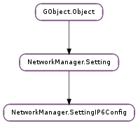

| static | new() |
| add_address(address) | |
| add_dns(dns) | |
| add_dns_search(dns_search) | |
| add_route(route) | |
| clear_addresses() | |
| clear_dns() | |
| clear_dns_searches() | |
| clear_routes() | |
| get_address(i) | |
| get_dhcp_hostname() | |
| get_dns(i) | |
| get_dns_search(i) | |
| get_ignore_auto_dns() | |
| get_ignore_auto_routes() | |
| get_ip6_privacy() | |
| get_may_fail() | |
| get_method() | |
| get_never_default() | |
| get_num_addresses() | |
| get_num_dns() | |
| get_num_dns_searches() | |
| get_num_routes() | |
| get_route(i) | |
| remove_address(i) | |
| remove_dns(i) | |
| remove_dns_search(i) | |
| remove_route(i) |
| Name | Type | Flags | Description |
|---|---|---|---|
| dhcp-hostname | str | r/w | The specified name will be sent to the DHCP server when acquiring a lease. |
| ignore-auto-dns | bool | r/w | When the method is set to ‘auto’ or ‘dhcp’ and this property is set to True, automatically configured nameservers and search domains are ignored and only nameservers and search domains specified in the ‘dns’ and ‘dns-search’ properties, if any, are used. |
| ignore-auto-routes | bool | r/w | When the method is set to ‘auto’ or ‘dhcp’ and this property is set to True, automatically configured routes are ignored and only routes specified in the ‘routes’ property, if any, are used. |
| ip6-privacy | int | r/w | Configure IPv6 Privacy Extensions for SLAAC, described in RFC4941. If enabled, it makes the kernel generate a temporary IPv6 address in addition to the public one generated from MAC address via modified EUI-64. This enhances privacy, but could cause problems in some applications, on the other hand. The permitted values are: 0: disabled, 1: enabled (prefer public address), 2: enabled (prefer temporary addresses). |
| may-fail | bool | r/w | If True, allow overall network configuration to proceed even if IPv6 configuration times out. Note that at least one IP configuration must succeed or overall network configuration will still fail. For example, in IPv4-only networks, setting this property to True allows the overall network configuration to succeed if IPv6 configuration fails but IPv4 configuration completes successfully. |
| method | str | r/w | IPv6 configuration method. If ‘auto’ is specified then the appropriate automatic method (PPP, router advertisement, etc) is used for the device and most other properties can be left unset. To force the use of DHCP only, specify ‘dhcp’; this method is only valid for ethernet-based hardware. If ‘link-local’ is specified, then an IPv6 link-local address will be assigned to the interface. If ‘manual’ is specified, static IP addressing is used and at least one IP address must be given in the ‘addresses’ property. If ‘ignored’ is specified, IPv6 configuration is not done. This property must be set. NOTE: the ‘shared’ methodis not yet supported. |
| never-default | bool | r/w | If True, this connection will never be the default IPv6 connection, meaning it will never be assigned the default IPv6 route by NetworkManager. |
None
| Name | Type | Access |
|---|---|---|
| parent | NetworkManager.Setting | r |
Bases: NetworkManager.Setting
| Returns: | the new empty NetworkManager.SettingIP6Config object |
|---|---|
| Return type: | NetworkManager.Setting |
Creates a new NetworkManager.SettingIP6Config object with default values.
| Parameters: | address (NetworkManager.IP6Address) – the new address to add |
|---|---|
| Returns: | True if the address was added; False if the address was already known. |
| Return type: | bool |
Adds a new IPv6 address and associated information to the setting. The given address is duplicated internally and is not changed by this function.
| Parameters: | dns (object) – the IPv6 address of the DNS server to add |
|---|---|
| Returns: | True if the DNS server was added; False if the server was already known |
| Return type: | bool |
Adds a new DNS server to the setting.
| Parameters: | dns_search (str) – the search domain to add |
|---|---|
| Returns: | True if the DNS search domain was added; False if the search domain was already known |
| Return type: | bool |
Adds a new DNS search domain to the setting.
| Parameters: | route (NetworkManager.IP6Route) – the route to add |
|---|---|
| Returns: | True if the route was added; False if the route was already known. |
| Return type: | bool |
Adds a new IPv6 route and associated information to the setting. The given route is duplicated internally and is not changed by this function.
Removes all configured addresses.
Removes all configured DNS servers.
Removes all configured DNS search domains.
Removes all configured routes.
| Parameters: | i (int) – index number of the address to return |
|---|---|
| Returns: | the address at index i |
| Return type: | NetworkManager.IP6Address |
| Returns: | the configured hostname to send to the DHCP server |
|---|---|
| Return type: | str |
Returns the value contained in the NetworkManager.SettingIP6Config :dhcp-hostname property.
| Parameters: | i (int) – index number of the DNS server to return |
|---|---|
| Returns: | the IPv6 address of the DNS server at index i |
| Return type: | int |
| Parameters: | i (int) – index number of the DNS search domain to return |
|---|---|
| Returns: | the DNS search domain at index i |
| Return type: | str |
| Returns: | True if automatically configured (ie via DHCP or router advertisements) DNS information should be ignored. |
|---|---|
| Return type: | bool |
Returns the value contained in the NetworkManager.SettingIP6Config :ignore-auto-dns property.
| Returns: | True if automatically configured (ie via DHCP) routes should be ignored. |
|---|---|
| Return type: | bool |
Returns the value contained in the NetworkManager.SettingIP6Config :ignore-auto-routes property.
| Returns: | IPv6 Privacy Extensions configuration value (NetworkManager.SettingIP6ConfigPrivacy ). |
|---|---|
| Return type: | NetworkManager.SettingIP6ConfigPrivacy |
Returns the value contained in the NetworkManager.SettingIP6Config :ip6-privacy property.
| Returns: | True if this connection doesn’t require IPv6 addressing to complete for the connection to succeed. |
|---|---|
| Return type: | bool |
Returns the value contained in the NetworkManager.SettingIP6Config :may-fail property.
| Returns: | the NetworkManager.SettingIP6Config :method property of the setting |
|---|---|
| Return type: | str |
| Returns: | True if this connection should never be the default connection for IPv6 addressing |
|---|---|
| Return type: | bool |
Returns the value contained in the NetworkManager.SettingIP6Config :never-default property.
| Parameters: | i (int) – index number of the route to return |
|---|---|
| Returns: | the route at index i |
| Return type: | NetworkManager.IP6Route |
| Parameters: | i (int) – index number of the address to remove |
|---|
Removes the address at index i.
| Parameters: | i (int) – index number of the DNS server to remove |
|---|
Removes the DNS server at index i.